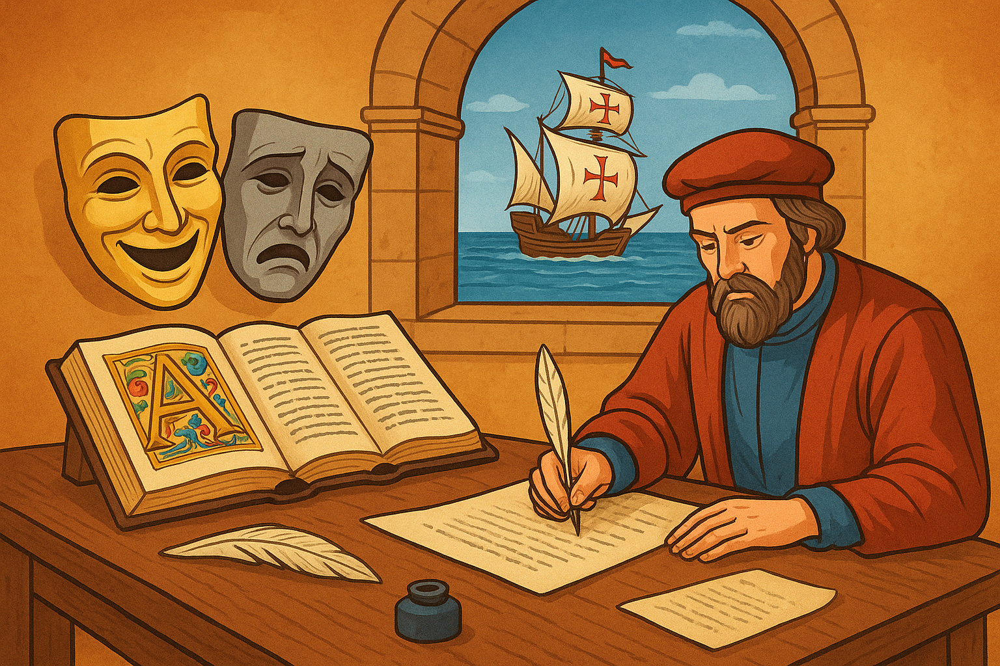

Humanismo na Literatura Portuguesa
Introdução
O Humanismo foi um movimento cultural e intelectual que floresceu na Europa durante os séculos XV e XVI, tendo como base o ideal de valorização do ser humano, da razão e do conhecimento. Em Portugal, esse período corresponde à transição entre a Idade Média e o Renascimento, refletindo-se não apenas na literatura, mas também na ciência, na política e nas artes.
Contexto histórico
O Humanismo português está diretamente ligado à expansão marítima e às grandes navegações, que ampliaram o contato com novos povos, culturas e territórios. Lisboa transformou-se em um centro de circulação de ideias, livros e riquezas, favorecendo a chegada de novos valores intelectuais vindos da Itália e de outras partes da Europa.
Características do Humanismo em Portugal
- Valorização do ser humano como centro das reflexões.
- Interesse pelo estudo dos clássicos greco-latinos.
- Uso da sátira e da crítica social.
- Aperfeiçoamento da prosa e do teatro em língua portuguesa.
- Busca de clareza e objetividade no uso da linguagem.
Principais autores e obras
Entre os nomes mais marcantes do Humanismo português, podemos destacar:
- Fernão Lopes: considerado o primeiro grande cronista português, destacou-se pelo realismo e pela análise crítica dos acontecimentos históricos em obras como a Crónica de D. João I.
- Gil Vicente: o maior representante do teatro português nesse período, com obras como Auto da Barca do Inferno, que unia humor, crítica social e reflexão moral.
- Garcia de Resende: responsável pelo Cancioneiro Geral, uma coletânea que reúne a produção poética do final da Idade Média e início do Humanismo.
Importância do Humanismo
O Humanismo representou um momento de transição fundamental na literatura portuguesa, preparando o terreno para o pleno desenvolvimento do Renascimento. Além de marcar uma virada no modo de compreender o ser humano e a sociedade, deu origem a uma produção literária mais crítica, consciente e voltada para os valores universais.